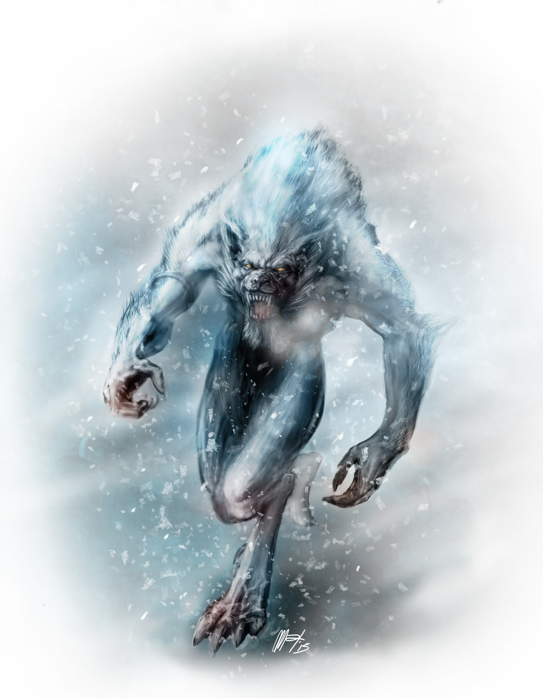

Eoyu del Cielo è il Drago Patrono di Elfi, Troll e Ur-Aluk.
Gli Elfi furono creati plasmando i raggi del sole.
Gli elfi si considerano i “prescelti” del Drago e credono di rappresentare una guida per tutta Populon. Quest’idea non è accettata però dalle altre razze, e molte guerre sono scoppiate perchè signori elfi tentavano di sopraffare altri popoli. Per quanto siano individui nobili, accade infatti che gli elfi cedano all’oscurità, cadendo in quella che essi stessi chiamano “eclissi”, una follia tirannica e visionaria che può manifestarsi nel piccolo cosmo di una compagnia come nel governo di un regno. Gli elfi sono alti circa 1,80 metri, e sono magri e agili. Hanno orecchie appuntite e il volto allungato con zigomi alti. Gli occhi, così come i capelli, possono assumere tinte varie, dal biondo al castano, dal nero al rosso. I clan elfici sono miriadi e vi possono essere differenze nella statura e nel colore della pelle legate all’ambiente circostante. Un elfo vive in media fino a 130 anni.
Gli Ur-Aluk nacquero dai raggi della luna.
Simili agli elfi, essi posseggono la straordinaria capacità di mutarsi in lupi. Nella loro forma drakan sono alti, robusti e con la pelle chiara coperta da una leggera peluria bianca. I denti, soprattutto i canini, sono pronunciati, i loro tratti arcigni. Nella forma di lupo sono più grandi, forti e robusti dei lupi normali. Gli Ur-Aluk vivono divisi in tribù. Quale sia quella dominante è deciso ogni anno col Rituale della Grande Luna. La notte in cui la Luna è piena e più vicina a Populon, le tribù si riuniscono sul Grande Occhio, il lago ghiacciato al centro della Testa. Ognuna sceglie un campione, e fra i vari campioni inizia una lotta furibonda. Alla fine un solo guerriero rimane in piedi. La sua tribù sarà quella regnante, la prima a “cacciare”: a recarsi cioè negli altri villaggi rapendone le donne. O gli uomini, se il campione trionfante è una femmina. Poi la tribù ultima a sparire dal ring del Lago di Ghiaccio potrà cacciare da tutte le altre esclusa la vincitrice e così via, fino alla tribù sparita per prima dalla lotta. Il Rituale muta costantemente i membri delle tribù che perciò sono governate dagli anziani, ovvero coloro che hanno superato i 50 inverni e che non possono essere rapiti. Gli Ur-Aluk sono fieri, spesso prepotenti, e convinti che qualunque cosa spetti al più forte. Hanno però molto rispetto per chi eccelle nel combattimento e per i legami di sangue, anche quelli nati sul campo di battaglia.
I Troll furono creati dalla neve.
I Troll vivono fino a 160 anni e hanno un ciclo riproduttivo particolare, dove il concepimento coincide con la morte. Giunti alla vecchiaia, compiono un viaggio alla ricerca di un partner. Trovatolo e scelto un luogo adatto, giacciono una notte assieme. I due troll non si rialzeranno più. Essi mettono letteralmente radici, perdendo pian piano le sembianze originarie e divenendo parte del paesaggio. Al contempo la femmina porta avanti la gestazione e dopo circa 10 mesi genera da 2 a 4 figli, che nascono così dalla terra stessa. I piccoli troll sono uniti ai genitori da un robusto cordone ombelicale, e si occupano di nutrirli e accudirli. Quando la fusione dei genitori con la terra è completa ed essi non hanno più necessità di essere accuditi, il cordone ombelicale si spezza e i figli sono liberi di andare per la propria strada. I troll sono alti circa 2,5 metri. Hanno la pelle bianca, coperta da soffice pelo. Hanno mani, naso e piedi grandi e nodosi. Gli occhi sono larghi e chiari, i capelli lunghi e stopposi. Nonostante la loro stazza e forza fisica i troll sono socievoli, riflessivi, amanti della condivisione. Considerati la “razza filosofa” di Populon, amano la conoscenza, che preferiscono ottenere con l’esperienza piuttosto che dai libri. Anche il combattimento è un'esperienza da cui imparare, uno studio dell’avversario, e non lotta per la sopraffazione. In generale però risolvono i problemi discutendo e preferiscono vivere in comunità connotate da libertà, democrazia e uguaglianza.
Salta il menu dei draghi